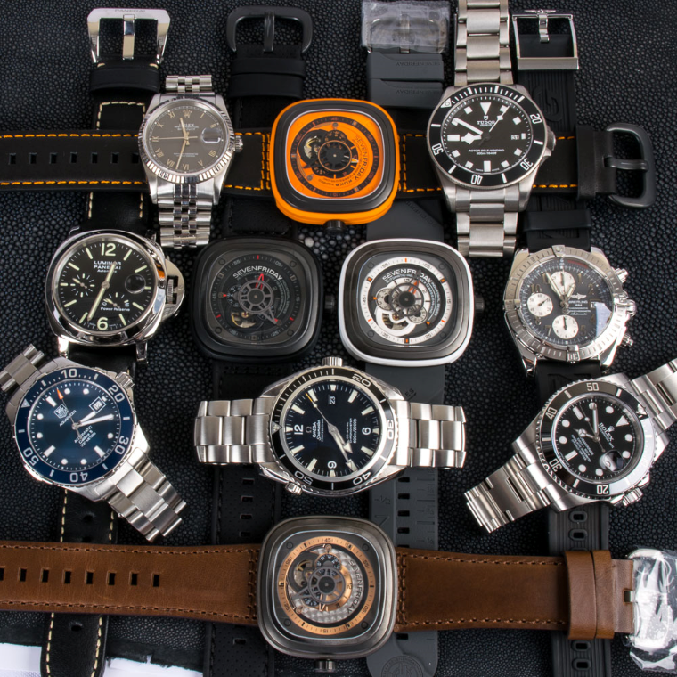
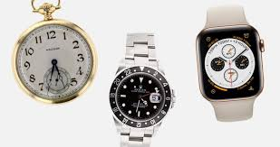
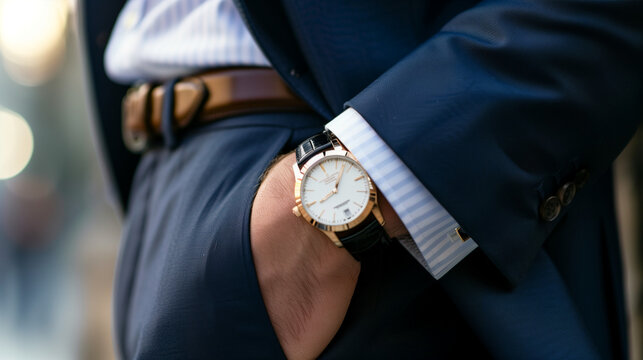
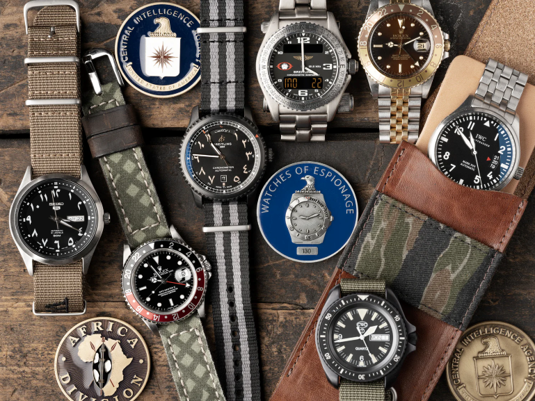

The watch industry has evolved from traditional mechanical watches to quartz watches and now to smartwatches, redefining how we measure time and interact with our devices.



The watchmaking industry, deeply rooted in tradition and craftsmanship, has been on its journey of transformation with the advent of modern technology. From being a functional timekeeping tool, through centuries, it evolved to become a symbol related to status, style, and precision. But the digital age has reshaped consumer expectations and revolutionized the way watches are designed, manufactured, and sold. These changes in technology have also completely altered consumer trends. Today's buyer is more into convenience and personalization, and increasingly into multi-functions, often holding innovation to be as important as heritage. The consumption habits again got influenced with the advent of e-commerce and social media platforms when brands could address a global market while catering to the requirements of each individual.
